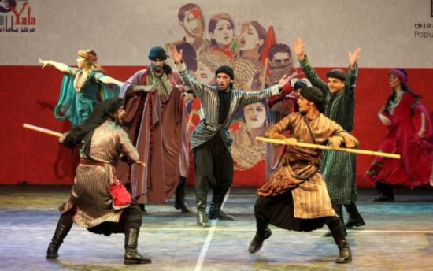

Help your country to preserve its history and culture.

The world is moving towards digitalizing and categorizing cultural heritage elements for the purpose of preserving them. For example, the European cultural heritage portals Europeana (www.europeana.eu) and Michael Culture (www.michael-culture.org) are the most pioneering multilingual semantic portals for cultural heritage. Both portals aim at making European cultural objects such as books, paintings, monuments, science, buildings, fashion, music, etc, accessible to the public online. What distinguishes these portals is that they allow semantic-based multilingual search through using multilingual ontologies/thesaurus in the background.
This project aims at building a Palestinian multilingual portal that provides a semantic-based search engine for searching Palestinian cultural heritage objects. In developing this portal and its search engine, the students will collaborate with the researchers and developers working on Michael Culture Portal, who will provide them with the tools/ontologies/thesaurus used in Michael Culture Portal. Also, many organizations in Palestine will be collaborating in this project by providing large datasets of digitized cultural object to use in the portal.
Remarks:
See Other Project Proposals: